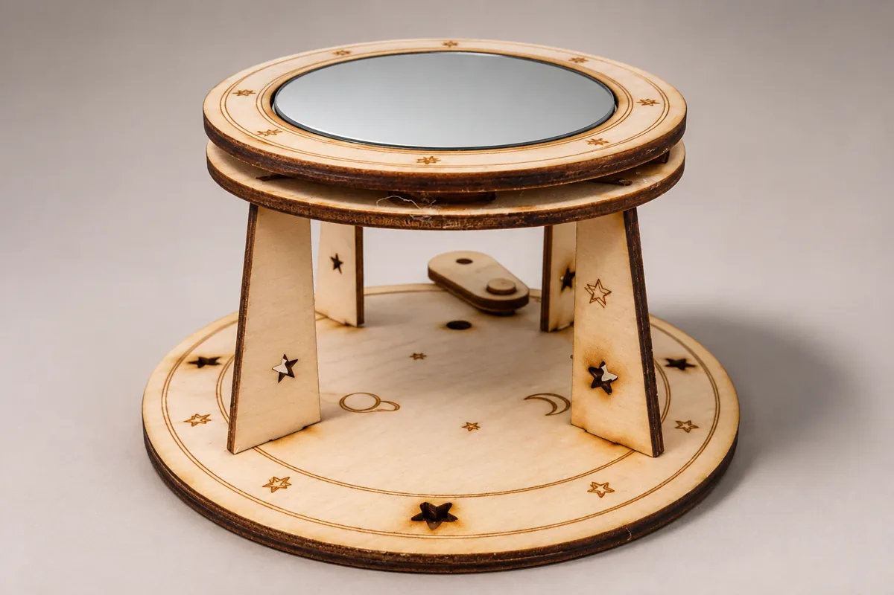
Mirror Stand
Designed in SolidWorks, laser-cut, and assembled.
SolidWorksLaser cuttingAssembly
0.13 in wood · 9 parts
Portfolio
Eight projects spanning mechanical design, fabrication, electronics, and research. Each page explains my role, the design decisions, and what testing showed.
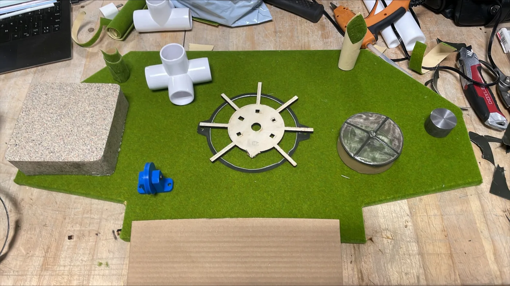
In progress / ME 490 Capstone · Team Project
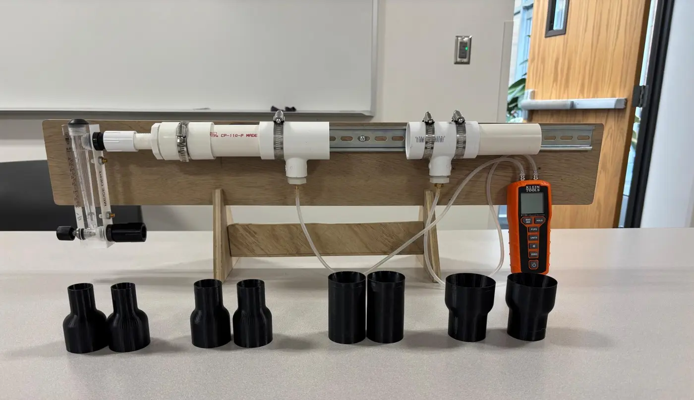
Ongoing / ME 490 Special Problem · Research
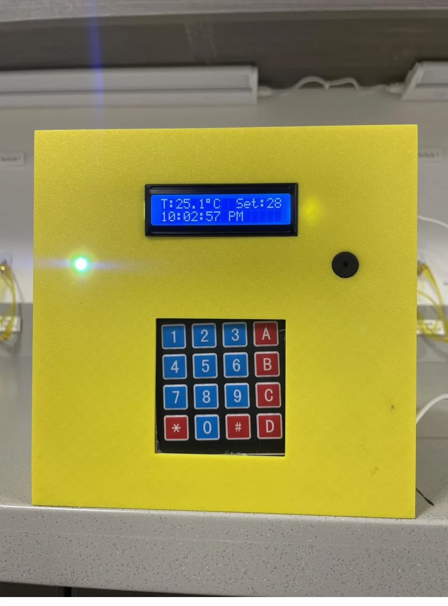
01 / Mechatronics · Solo Build
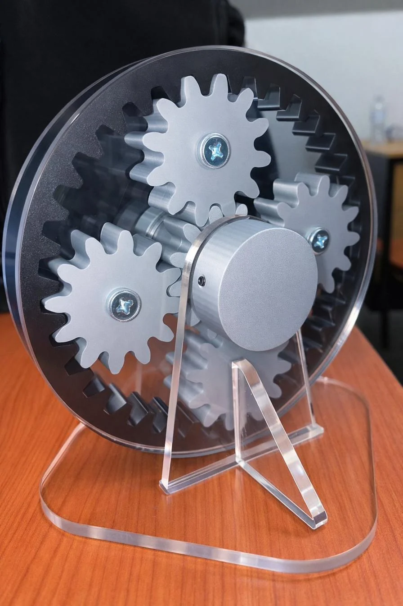
02 / CAD · Fabrication
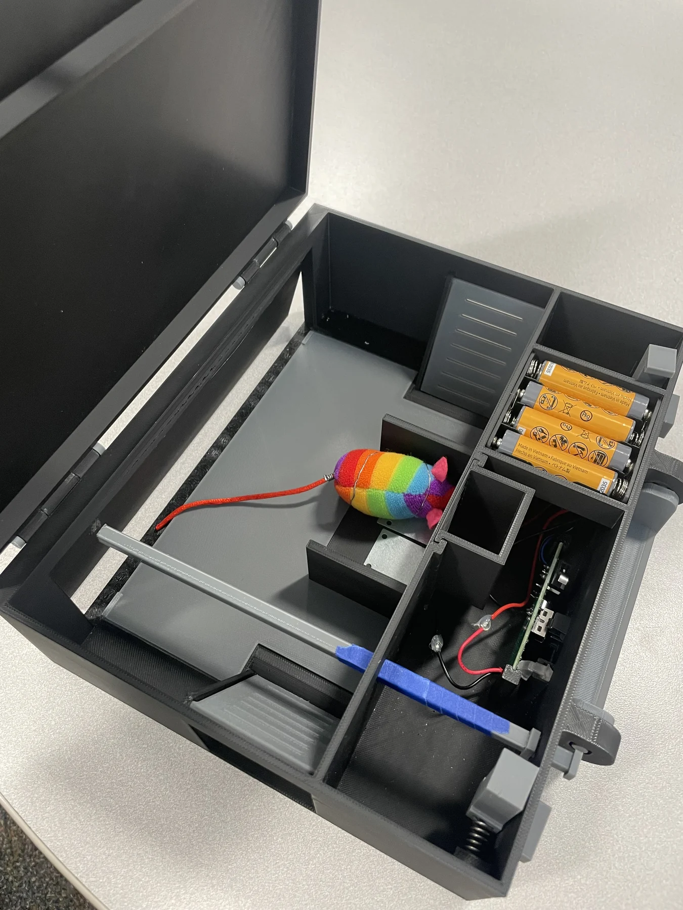
03 / Product Design · Team Project
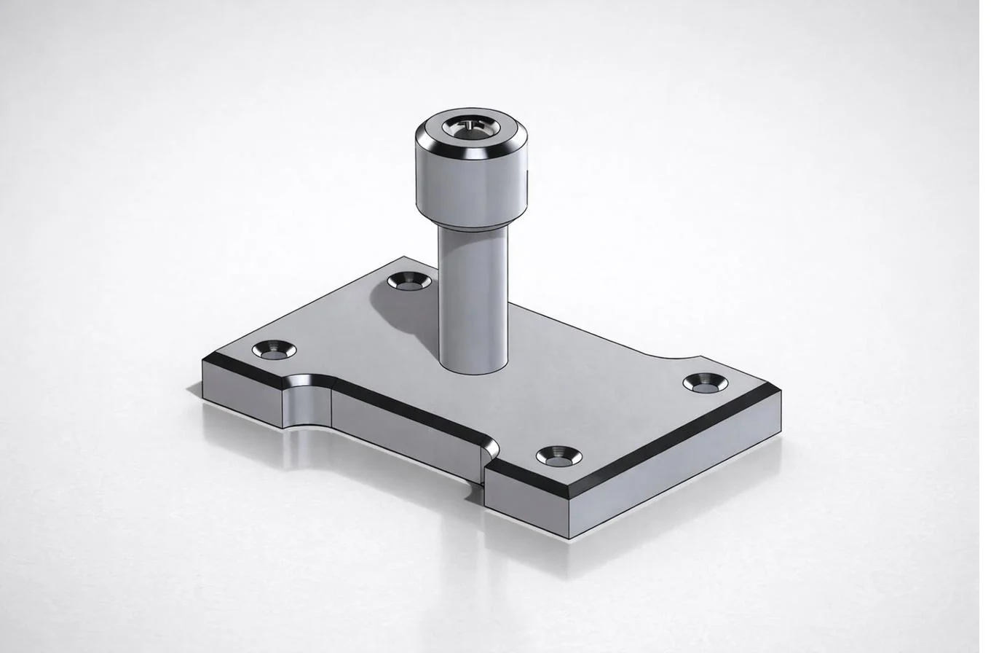
04 / Manual Machining
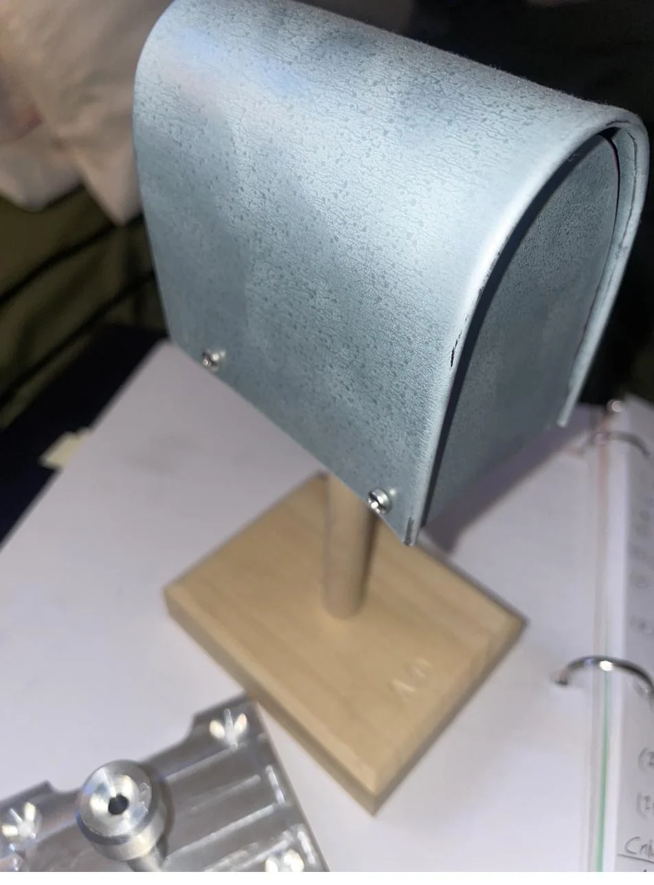
05 / Sheet Metal · Assembly
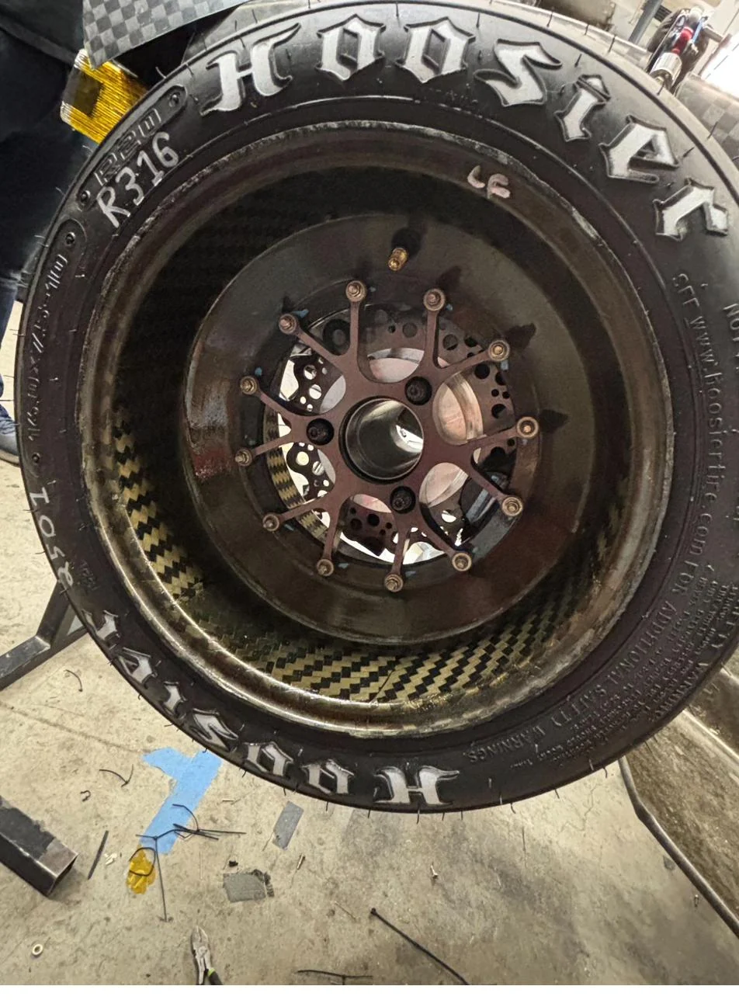
06 / Automotive · Team Build
Personal

Designed in SolidWorks, laser-cut, and assembled.
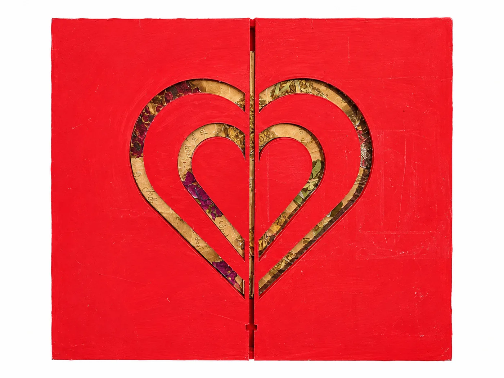
An envelope that doubles as a frame. Two rack-and-pinion gears open the heart-shaped face. I designed it in SolidWorks and 3D-printed it for my girlfriend.
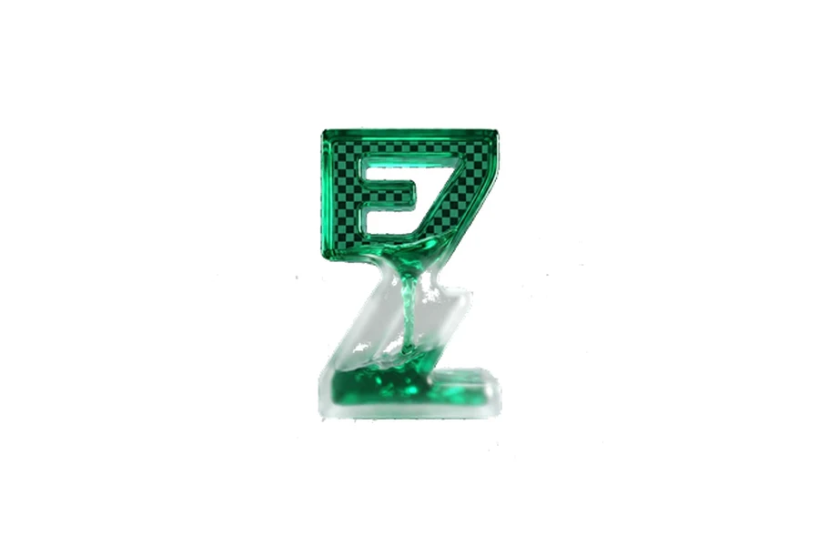
A clock-in system I built solo for small businesses. Owners track hours and employee info; leads assign tasks and chain them into workflows. It works for personal use too, with a Pomodoro timer and time stamps. I still ship updates in my free time.
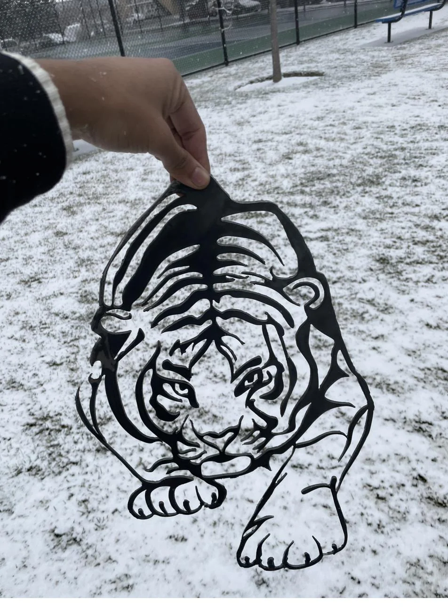
A tiger pattern traced in SolidWorks, laser-cut from quarter-inch steel, and refined with hand tools.